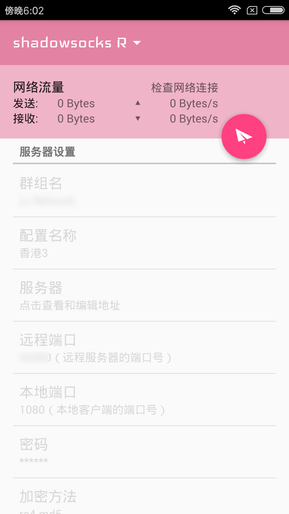
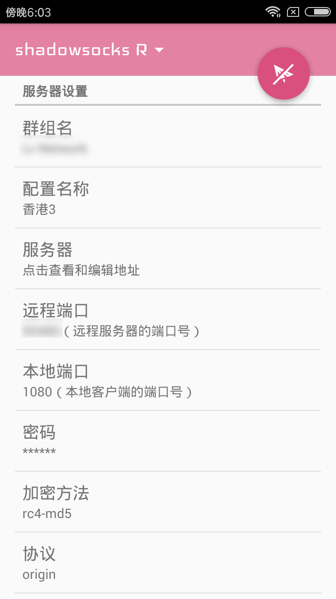
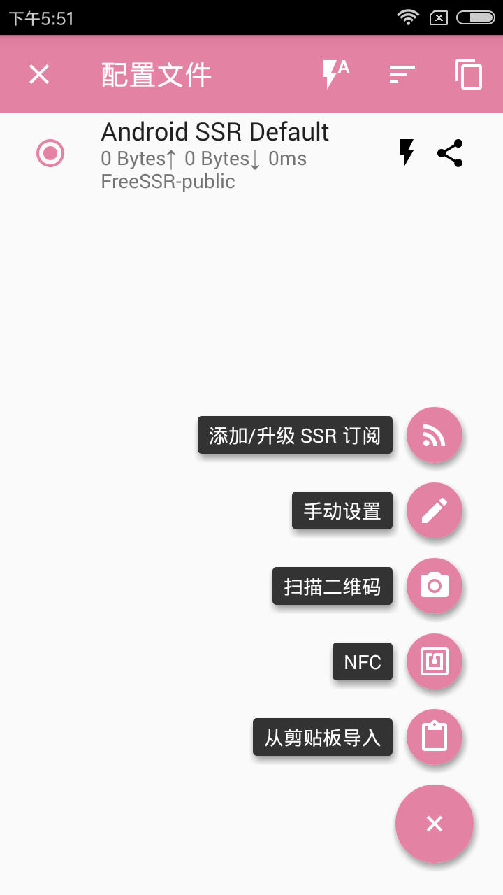
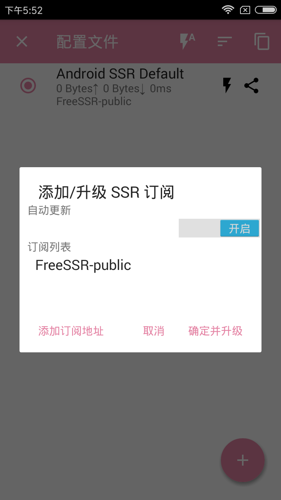
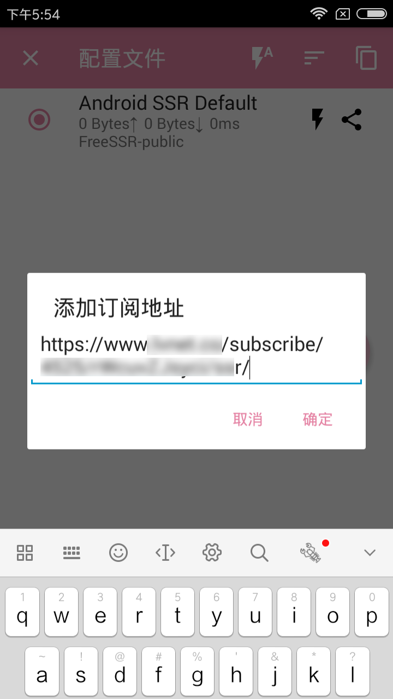
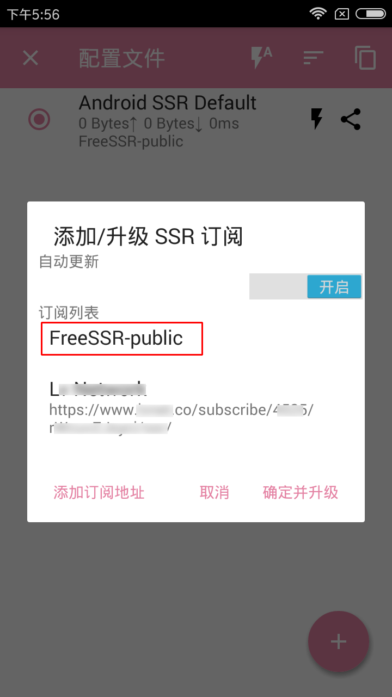
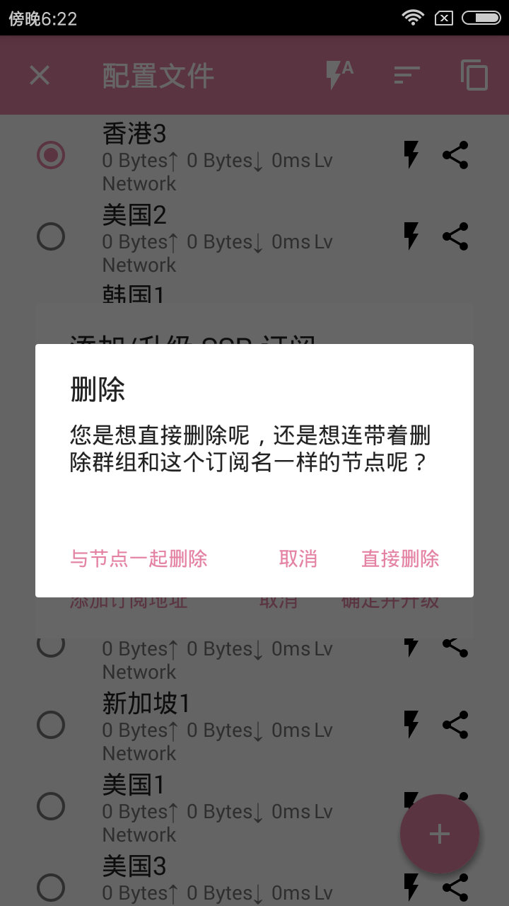
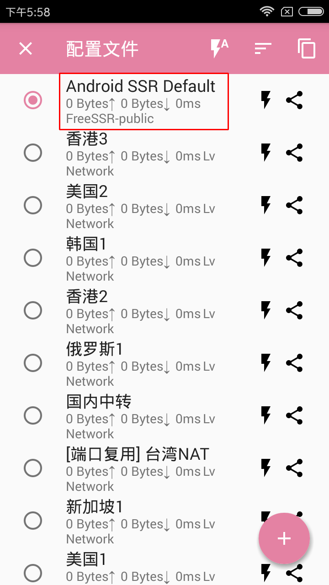
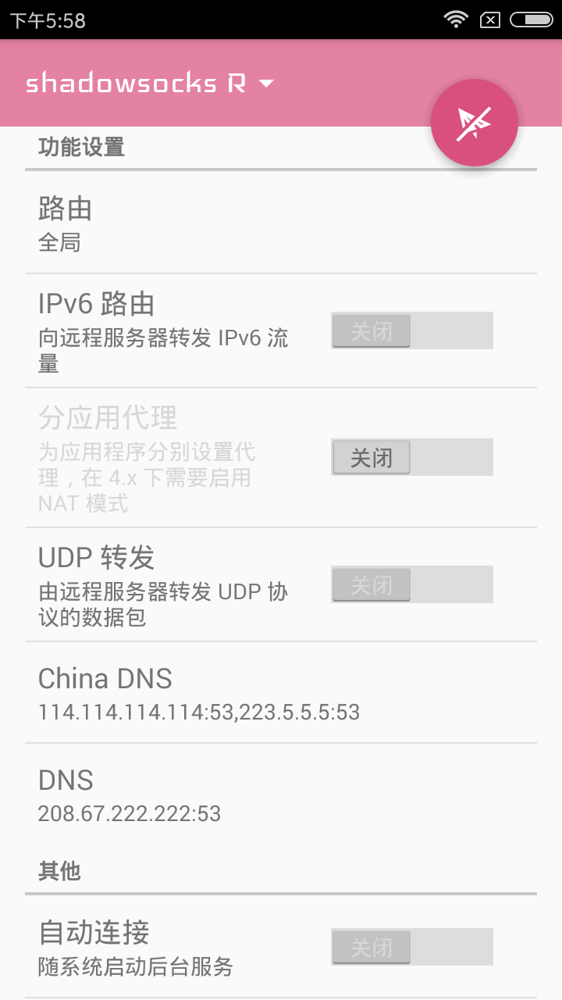
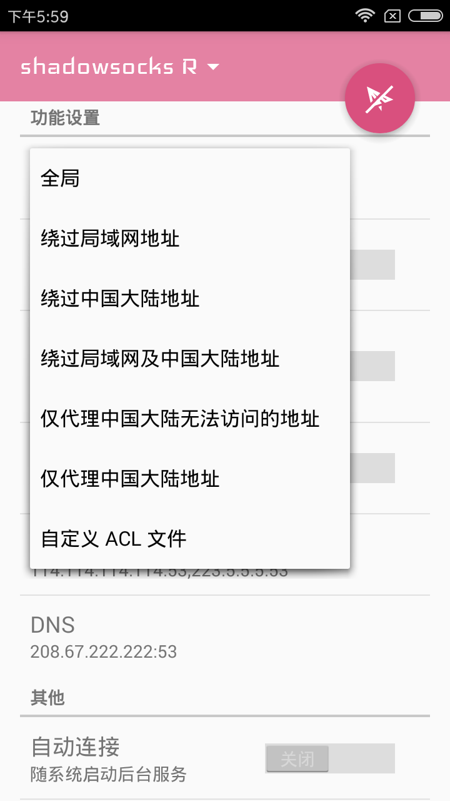

1.得到订阅链接可以在上方导航栏的《必看第一步》内得到
步骤10极为重要，一旦设置出错，那必须重新安装软件及配置，更加浪费时间
2.开始操作建议先阅读一遍全文，再开始设置，以防设置出错，特别是步骤10，非常重要
- 下载软件，并完成安装及打开软件
- 添加订阅链接至软件内 步骤1
- 添加订阅链接至软件内 步骤2
- 添加订阅链接至软件内 步骤3
- 添加订阅链接至软件内 步骤4
- 添加订阅链接至软件内 步骤5
- 添加订阅链接至软件内 步骤6
- 添加订阅链接至软件内 步骤7
- 添加订阅链接至软件内 步骤8
- 添加订阅链接至软件内 步骤9
- 添加订阅链接至软件内 步骤10
- 如无意外您的手机已经完成了设置，并连接上了代理，如下图 
- 若出现无法使用，请尝试切换节点，如切换所有节点依旧无效，请卸载软件重新安装，重新跟着教程配置
- 另外《切换节点的方式》为，点击顶部的ShadowsocksR文字，进入配置文件，点击您想要切换的节点即可
此步骤不演示，下载地址请点击上方导航栏的《下载中心》。
如下图所示，点击顶部《shadowsocksR》字样，进入添加页面
如下图所示，点击右下角的《+》符号，唤出添加页面，点击第一个选项《添加/升级SSR订阅》按钮
如下图所示，点击方框内左下角的《添加订阅地址》，并将滑块向右滑动，选中《自动更新》
如下图所示，在可填写处，粘贴您的《订阅链接》地址
如下图所示，在红色方框处，按住并向左滑动，请看下一个步骤6
如下图所示，选择《与节点一起删除》，删除掉红框内文字后，最后点击《确定并升级》（若不删除，则程序会一直显示处理中）
如下图所示，如无意外您应该已经添加好了订阅的节点，然后将红色方框内的内容，按住后向左滑动，删除这个选项，其余选项不动
如下图所示，点击左上角的《x》符号，返回主页面，并滑动向下，找到《功能设置》模块下的《路由设置》并点击它
如下图所示，选择《绕过中国大陆地址》（若选择此选项后，您需要访问的地址还是无法打开，先切换节点，不行，则将此选项改为全局(全局模式下整台手机的流量都会从代理走，极度消耗流量，请在不使用时，关闭代理）
此步骤至关重要，若操作不当，请删除软件重新安装
如下图所示，滑动页面至最顶部后，点击右上角的《纸飞机图标》然后会立马弹框，请一定选择《同意添加vpn连接》（各厂手机提示有所不同，总之点击确定，信任，同意等）

各版本设置有所不同，但总体来说是差不多的，若您无法上网请仔细查看教程。
Copyright © 2019 hidden proxy. All Rights Reserved.